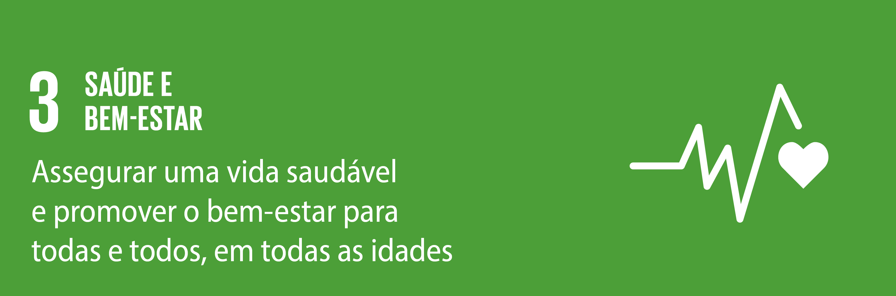

ODS 3 - Saúde e Bem-Estar
Promovendo a saúde e o bem-estar para todos, com ênfase em saúde mental.
Objetivo de Desenvolvimento Sustentável 3: Saúde e Bem-Estar
O Objetivo de Desenvolvimento Sustentável 3 (ODS 3) busca garantir uma vida saudável e promover o bem-estar para todos, em todas as idades. No âmbito deste objetivo, um dos principais focos é a saúde mental, um aspecto fundamental para o bem-estar individual e coletivo.
Este projeto tem como missão oferecer informações e recursos acessíveis sobre saúde mental, abordando desde a conscientização sobre transtornos mentais até as estratégias de prevenção e busca de ajuda.
Saúde Mental e Bem-Estar

A saúde mental é uma parte fundamental do bem-estar humano, envolvendo nosso estado emocional, psicológico e social. Ela influencia como lidamos com os desafios diários, tomamos decisões e nos relacionamos com os outros. Uma mente saudável nos permite enfrentar adversidades, manter equilíbrio em nossas vidas.
O cuidado com a saúde mental é tão importante quanto o cuidado com o corpo. Ele inclui práticas como seriedade e emoções, buscar apoio em momentos difíceis e adotar hábitos que promovam bem-estar, como atividade física, alimentação equilibrada e descanso adequado.
A maior cura é o cuidado que você dedica ao seu próprio ser. - Dalai Lama